Cleo Abram sat down with Google DeepMind CEO Demis Hassabis and turned the interview into a live explainer — a Jenga tower where every block is a project. Across 65 minutes it becomes a map of what AI is actually doing beyond chatbots, how it learned to be creative, the two things Hassabis genuinely worries about, and the wildly optimistic future he's trying to build.
Watch on YouTubeCleo Abram brought props: a Jenga tower where each block is a DeepMind project. The conceit doubles as the thesis — there are far more of these than most people realize, and the ones reshaping your life aren't the visible ones.
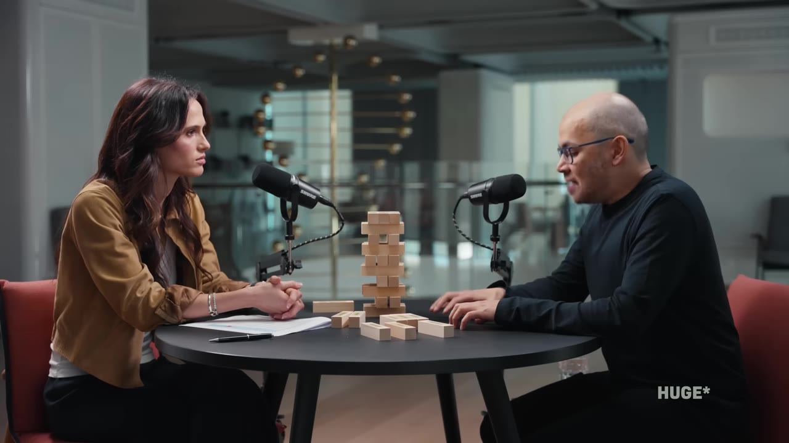
The ways in which AI is meaningfully shaping people's lives most are the things that are invisible to them most of the time.— Demis Hassabis
The invisible layer he means: drug design, genomics, natural-disaster detection, nuclear fusion, materials, quantum computing. Tools, not chatbots.
Proteins fold into 3D shapes that determine their function; predicting that shape from the amino-acid sequence was a 50-year "grand challenge" — Hassabis calls it biology's Fermat's Last Theorem. Old way: shoot X-rays at one protein, spend years and hundreds of thousands of dollars.
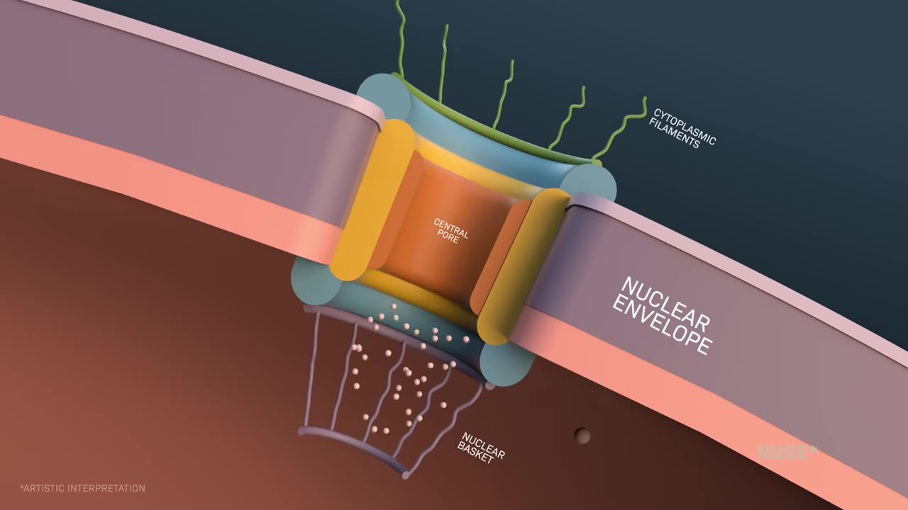
The pivotal moment came in a meeting (caught on camera): instead of building a server for scientists to request proteins one by one, why not just fold all of them and publish?
We should just run every protein in existence. And then release that.— Demis Hassabis
They did — ~200 million structures, free. Over 3 million scientists now use AlphaFold; a pharma scientist told him nearly every drug developed from now on will have used it somewhere.
Knowing a protein's shape is one piece. Isomorphic Labs builds the adjacent systems — "AlphaFold 3, AlphaFold 4, you could call it" — to design a compound that binds the right spot, strongly, without binding the other 20,000 proteins in the body (that's toxicity).
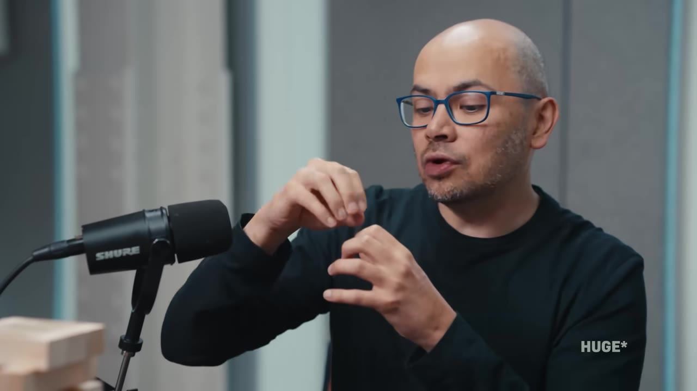
CRISPR can target nearly any DNA sequence — but for most genetic diseases we don't know which change drives the problem, especially in the 98% of the genome that doesn't code for proteins.
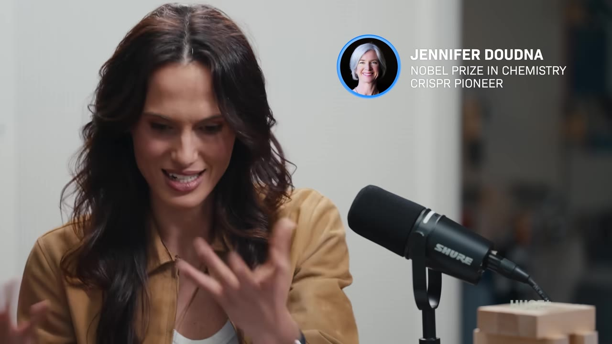
AlphaGenome predicts whether a single-letter mutation is harmful or benign — "the best system in the world" at it, Hassabis says, though not yet good enough for the hard multigenic cases. Pair a future version with CRISPR and you could find the mutation and fix it.
DeepMind's original deal: sell to Google to get the freedom to do science. Then ChatGPT shipped, Google went "code red," and Hassabis became head of all Google AI — including the consumer products.
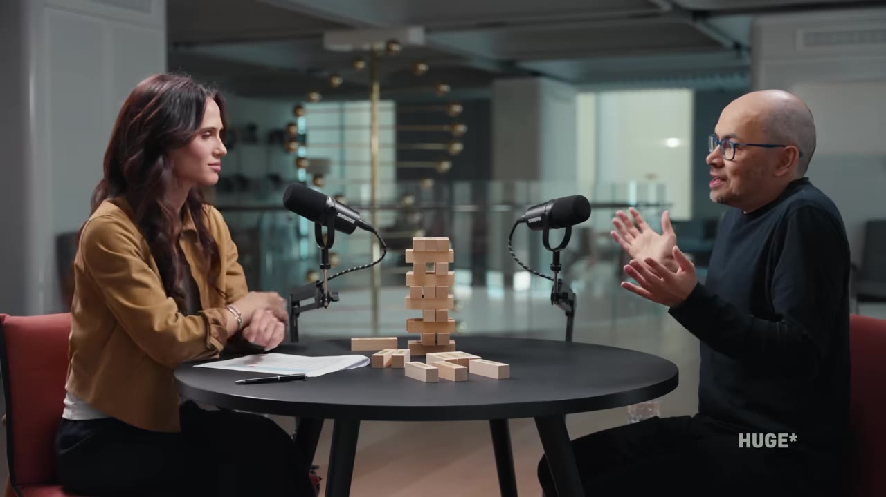
His honest accounting: the race means everyone uses near-frontier AI only months behind the labs (good for normalizing it), and real-world use surfaces flaws no internal testing can. But it's "ferocious commercial pressure," layered on a US–China geopolitical race. Language, it turned out, was far easier to crack than anyone expected — transformers plus reinforcement learning were enough.
A useful split: one family is given huge data and asked to predict (AlphaFold). Another is given only rules — math, physics, games like Go — and gets room to be genuinely creative.
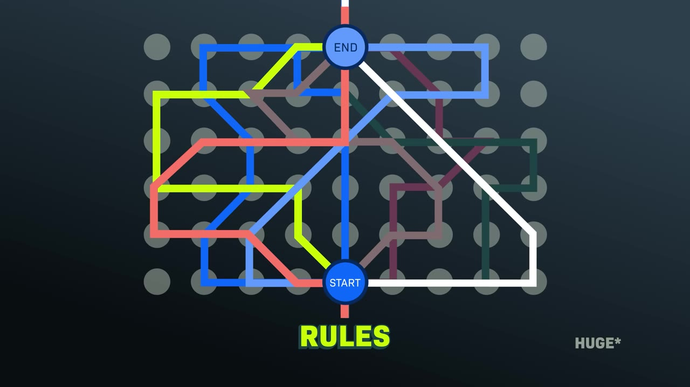
Old game AIs (Deep Blue beating Kasparov) were "expert systems" — grandmaster knowledge hand-coded in. Hassabis found that unsatisfying:
Something's obviously not quite right about the definition of intelligence — Deep Blue can't even play tic-tac-toe. The intelligence wasn't in the system; it was in the minds of the programmers.— Demis Hassabis
Go has more board positions (10^170) than atoms in the universe — unbruteforceable. In 2016 AlphaGo beat Lee Sedol 4–1, watched by 200 million people. In game two it played move 37: a move so unconventional a Go teacher would slap your wrist for it — that turned out to win the game 100+ moves later.
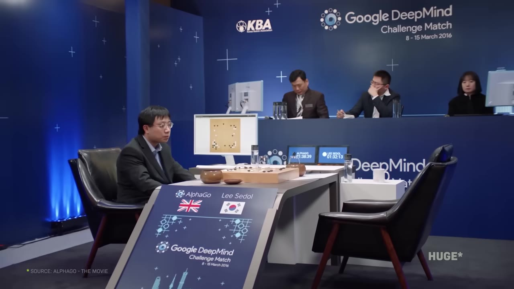
Then AlphaZero dropped the human data entirely — tabula rasa, learning from self-play:
It starts in the morning random… by tea time it's better than all grandmasters, and by dinner time it's better than the world champion.— Demis Hassabis
Hassabis thinks these search-and-self-play ideas are coming back — layered on today's foundation models as "world models," and applied to science: AlphaTensor found a faster matrix-multiplication algorithm; AlphaChip designs chip layouts better than humans.
Cleo adds a block: a real-time war game where the system crushes humans and the engineers cheer. It reframes the stakes — governments will use AI.
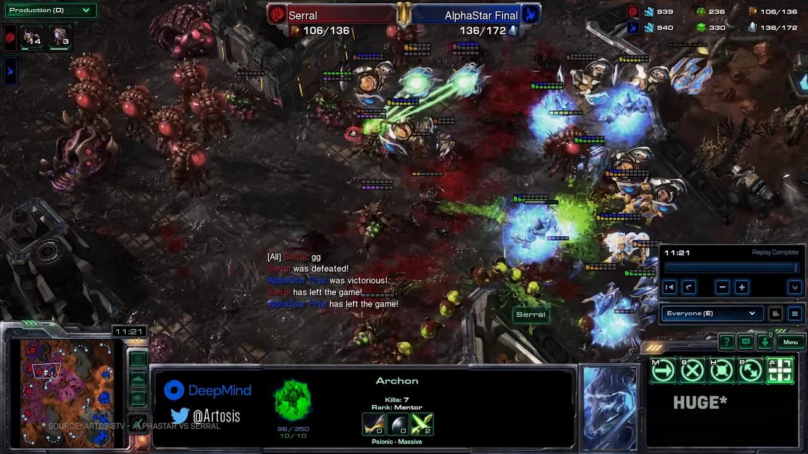
These, he argues, are underweighted even by experts; deepfakes and misinformation are real but nearer-term and narrower (DeepMind's SynthID watermarks generated media). His ask: international cooperation among the frontier labs on safety.
Hassabis calls this the central question of his life. Modern computers are Turing machines — able to compute anything computable — and he suspects the brain is an "approximate Turing machine" too. Roger Penrose argues there may be quantum effects in the brain; so far neuroscience hasn't found them.
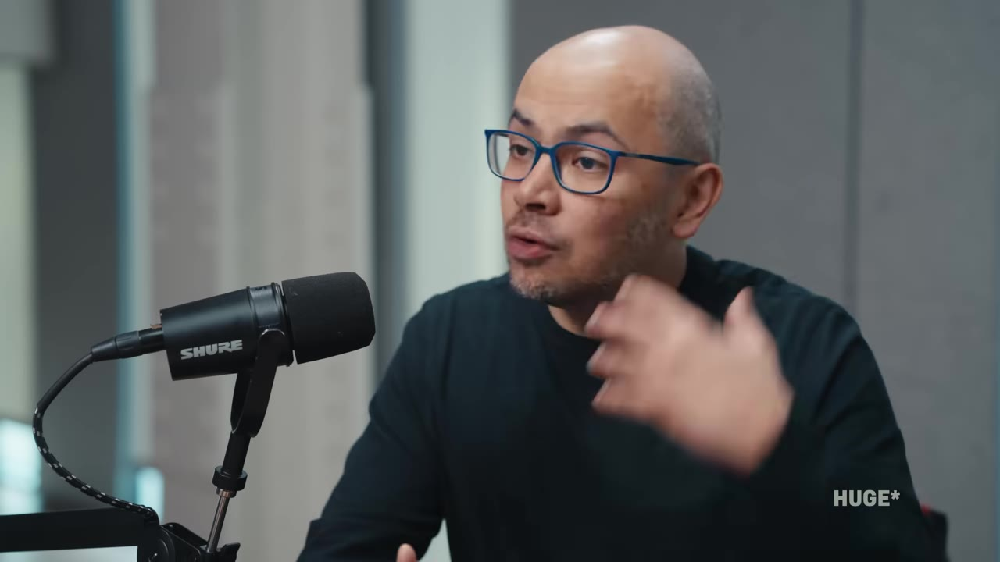
Cleo names the move we all make — hunting for the reason humans are special (center of the universe; emotion; creativity) and watching each claim fall. Hassabis still thinks we're special, and is genuinely open-minded — what he ultimately wants is to use AI to understand the nature of reality.
His sci-fi reference is Iain Banks' Culture series — a post-AGI world of abundance. The mechanism: AI cracks "root-node" problems in the tree of knowledge (AlphaFold was one), each unlocking whole branches.
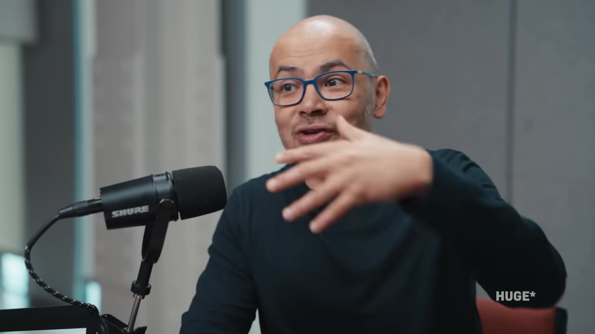
Asked how an optimistic viewer should participate, Hassabis is concrete: immerse yourself in every tool and become "superpowered" with them. Even the frontier labs can only explore a fraction of the applications — the capability overhang is widening.
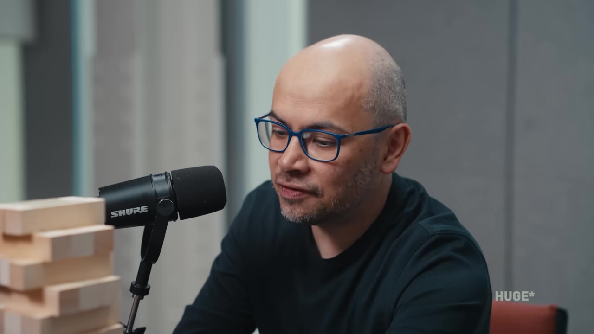
A kid these days could probably start a multi-billion-dollar business using these tools in some new way that no one had thought about.— Demis Hassabis
Cleo's closing question — what would you want said at your funeral — gets the simplest answer: "that my life was of benefit and service to humanity."